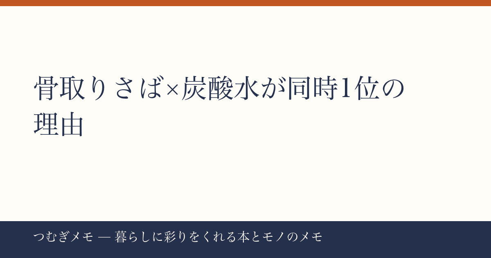

こんにちは、つむぎです。今週は楽天のランキングを見ていて「あ、これは偶然じゃない」と感じた動きがあったので、丸ごと1記事にしました。
この記事でわかること： 骨取りさば・炭酸水・無洗米が同週に楽天上位を独占した背景にある「賢い食卓ストック」という買い物の新しい基準と、それを自分の暮らしに取り入れる具体的な方法。
今週の要点
- 骨取りさば2商品が楽天総合1位・4位に同時ランクイン、合わせてレビュー5.6万件超
- 炭酸水48本セットが2位・8位に同時ランクイン、レビュー合計3.5万件超
- 令和7年産無洗米ブレンド米がレビュー7888件・★4.7で4位。「主食」「たんぱく質」「飲み物」の三角形が一気に揃った
---
今週の楽天ランキングで一番インパクトがあったのは、骨取りさばの2商品が同時上位を独占していた事実だ。1位商品はレビュー37,513件・★4.78、4位商品はレビュー19,427件・★4.51。どちらも1kg単位の冷凍商品で、「骨なし」「無塩」「訳あり」というキーワードが共通している。
なぜ今これが刺さるのか。背景に「調理の摩擦コストをなくしたい」という意識の変化があると思っている。魚を食べたい気持ちは昔からあるのに、小骨が怖い・塩分が気になる・下処理が面倒、という三重の障壁で足が止まる。骨取り・無塩の冷凍さばはその障壁を全部取り除いた状態で届く。1位商品が半額セールで3,490円という価格になった瞬間、「ためらう理由がなくなった」という判断が数万人規模で同時に起きた、という読み方ができる。
栄養面でいえば、青魚に含まれるオメガ3脂肪酸が注目されていることは各種調査でも報じられている。それ自体は昔からある知識だが、「冷凍庫に骨取りさばがある」という状態をストックしておけば、疲れた平日の夜でも魚定食が10分で完成する。これは「知識」ではなく「環境のデザイン」だ。
今日できる行動： 冷凍庫の一番手前に魚専用スペースを1枠確保する。物理的に場所を作っておくと「次のセールで買おう」という意思決定が格段に速くなる。
---
同じ週に、炭酸水500ml×48本セットが2位と8位に入っている。レビュー数はほぼ同じ（2位が17,650件、8位が17,626件）で、実質的に同じ商品の別クーポンが両方チャートに乗っている状態だ。
ここで面白いのは「なぜ炭酸水がさばと同じ週に伸びているのか」という点。僕の見立てでは、これらは別々のトレンドではなく「食卓ストックの見直し」という同一の文脈で動いている。さばで「主食の隣に置くたんぱく質」を確保し、炭酸水で「甘くない飲み物を常備する」習慣を同時に整えようとしている人が、今週一気に動いたのではないか。
炭酸水を箱買いするメリットは価格だけではない。「甘い飲み物を買わない」という選択肢を冷蔵庫に物理的に作ることで、無意識のジュース消費が減るという行動経済学的な効果がある。選択肢の量と質を「買い物の段階で」設計するという発想は、食習慣の本を読んでいると必ず出てくるテーマだ。
今日できる行動： 今週の飲み物コストを500mlペットボトル換算で計算してみる。まず現状を数字で把握することが、箱買いへの移行判断を合理的にする一歩目になる。
---
4位にランクインした無洗米ブレンド米（レビュー7,888件・★4.7）のタイトルで目を引くのは「令和7年産100％使用」という表記だ。例年この時期は新米への切り替えタイミングで、「古米ではないか」という消費者の不安が一番高まる。その不安に対して産年を正面から打ち出すことで、「品質を隠していない」という信頼のシグナルになっている。
無洗米である点も重要で、とぎ汁を流さなくていいという水の節約と、炊飯までの手間削減が同時に得られる。ストックのしやすさという点でも、密封パック5kg×2袋は開封前の保存が比較的しやすい形状だ。
主食（米）・たんぱく質（さば）・飲み物（炭酸水）という三つのカテゴリが同一週に揃ったことは、「食卓の土台を一気にリセットする」という買い物行動が起きていることを示唆している。3品目で合計レビュー数は実に6万5千件を超える。これだけの実購入者が評価した商品群が同時に話題になるのは珍しい現象だ。
ちなみに、食まわりの本を体系的にフォローしたい人には、料理・栄養・暮らし系の雑誌を定期購読するのも一つの手だ。(PR)Fujisan.co.jp 雑誌のオンライン書店を見るでは最大70%割引で定期購読できるので、気になる雑誌がある人はチェックしてみてほしい。
今日できる行動： 「主食・たんぱく質・飲み物」の3カテゴリを紙に書き出し、今の冷蔵庫・冷凍庫・ストックに何週間分あるかを棚卸しする。不足しているカテゴリが明確になると、次の買い物が迷わなくなる。
---
Q. 冷凍の骨取りさばって、解凍後においが気にならない？
冷凍魚の臭みは解凍方法でほぼ決まる。冷蔵庫でゆっくり低温解凍すると細胞が壊れにくく、ドリップ（水分）が出にくい。今回の1位商品はレビュー37,513件・★4.78という水準なので、日常的なリピーター購入が支えている数字と見てよく、臭みについての不安はかなり解消されていると思う。
Q. 炭酸水を箱買いするのは場所を取りすぎない？
500ml×48本は一定のスペースを要する。ただ、床置きでケースをそのまま使えば専用棚が不要になるというメリットもある。1ケース飲み切るまでの期間を自分のペースで試算してから注文するのが現実的だ。
Q. 無洗米はふつうの米と炊き方は同じ？
水量だけ少し多めに調整する（無洗米はとがないため、とぎ水を吸う工程がない分、加水量を気持ち増やす）。炊飯器に無洗米モードがある場合はそちらを使えばメーカーが調整済みなので迷わない。
---
今週の材料を見ていて感じたのは、「食費を削る節約」ではなく「摩擦を減らすことで食の質を上げる」という方向への関心が、数十万件のレビューと再生数に表れてきているということだ。骨を取る手間、砂糖を摂るリスク、米をとぐ時間——そういった小さな摩擦をひとつずつ消していくと、平日の夕食がじわじわ変わる。今週の記事がその棚卸しの入り口になれば嬉しい。
なお、「つむぎメモ」はAIとの協働で運営している実験的なメディアです。企画・選定・分析の視点は僕が担い、構成と文章はAIとの対話の中で磨いています。どんな記事が役に立ったか、X（@tsumugi_memo15）で教えてもらえると次回の材料にします。
📚 目次へ